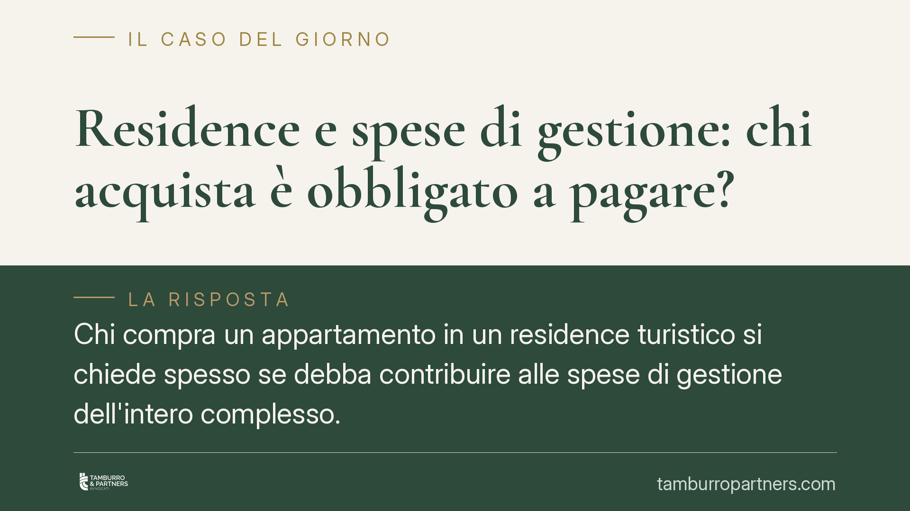

Residence e spese di gestione: chi acquista è obbligato a pagare?
Chi compra un appartamento in un residence turistico si chiede spesso se debba contribuire alle spese di gestione dell'intero complesso. La Cassazione ha chiarito che l'obbligo sussiste quando l'acquirente ha dichiarato nel rogito di conoscere e accettare il regolamento, anche se questo non è stato trascritto nei registri immobiliari. Vediamo perché e cosa comporta.

Il caso
Un proprietario di un appartamento all'interno di un complesso turistico-alberghiero contestava alla società di gestione l'obbligo di pagare le spese comuni del residence. La sua difesa: il regolamento che prevedeva tale contribuzione non era stato trascritto nei registri immobiliari e, quindi, non gli sarebbe stato opponibile.
La Corte di Cassazione ha respinto questa impostazione, confermando l'obbligo di pagamento. Il punto decisivo non è la trascrizione, ma l'accettazione del vincolo nell'atto di acquisto.
Inquadramento normativo
I complessi come i residence, composti da più edifici o unità immobiliari con parti e servizi comuni, ricadono nella disciplina condominiale. È l'art. 1117-bis del Codice civile a estendere le regole del condominio alle ipotesi in cui più unità immobiliari o più edifici abbiano parti comuni. Il residence, sotto questo profilo, funziona come un supercondominio.
Da qui discende l'applicazione dell'art. 1123 c.c., che pone a carico dei condomini le spese per la conservazione e il godimento delle parti comuni, in proporzione al valore della proprietà di ciascuno, salvo diversa convenzione.
La distinzione cruciale è tra due piani diversi. La trascrizione del regolamento serve a rendere il vincolo opponibile ai terzi, cioè a chi non ha partecipato all'atto e non ne è a conoscenza. L'efficacia contrattuale, invece, nasce dall'accettazione diretta: se nel rogito l'acquirente dichiara di conoscere e accettare il regolamento, quel vincolo lo lega a prescindere dalla trascrizione. Non è un terzo estraneo: è parte che ha assunto l'obbligo.
Implicazioni pratiche
Per chi acquista in un residence, la conseguenza è netta. La clausola con cui si dichiara di conoscere il regolamento del complesso non è una formalità di stile. È un'assunzione di obbligo che genera responsabilità economica, anche se il regolamento non risulta trascritto.
Un secondo aspetto merita attenzione. L'obbligo di contribuire alle spese comuni è legato alla titolarità del diritto di proprietà, non al godimento effettivo dell'immobile. Chi possiede l'appartamento paga anche se non lo utilizza mai, esattamente come accade in condominio. L'assenza dalla struttura non sospende l'obbligo.
Occorre però delimitare bene il perimetro. Una cosa sono le spese per le parti comuni — manutenzione di viali, aree verdi, impianti condivisi, illuminazione, portineria — che seguono la logica condominiale. Altra cosa sono i corrispettivi per servizi di natura alberghiera — pulizie in camera, cambio biancheria, reception con funzioni ricettive, servizi accessori a richiesta. Questi ultimi non discendono automaticamente dalla proprietà: presuppongono un rapporto contrattuale specifico e un'adesione mirata. Confondere i due piani è un errore frequente, sia da parte dei proprietari sia delle società di gestione.
Prima di firmare, quindi, la lettura attenta del regolamento e del quadro dei costi ricorrenti è determinante. È in quella fase che si misura l'impegno economico reale dell'acquisto.
Cosa fare in concreto
- Richiedi il regolamento del complesso prima del rogito e leggilo integralmente, con particolare attenzione alle voci di spesa a carico dei proprietari.
- Verifica cosa firmi nell'atto notarile: la dichiarazione di conoscenza e accettazione del regolamento ti vincola, indipendentemente dalla trascrizione.
- Distingui le spese comuni dai servizi alberghieri: chiedi alla società di gestione un prospetto che separi le due categorie e i relativi importi.
- Chiedi il rendiconto delle spese degli ultimi esercizi, per stimare l'impegno economico annuo prima dell'acquisto.
- Fatti assistere nella valutazione del regolamento se le clausole appaiono ambigue o particolarmente onerose: le criticità si negoziano prima della firma, non dopo.
In sintesi
Chi acquista in un residence e accetta il regolamento nel rogito è tenuto a contribuire alle spese di gestione delle parti comuni, anche in assenza di trascrizione. L'obbligo nasce dall'accettazione contrattuale e dalla titolarità della proprietà, non dall'uso effettivo dell'immobile. Attenzione, invece, a non confondere le spese comuni con i corrispettivi per servizi di natura alberghiera, che seguono regole diverse.
Contributo informativo a cura di Tamburro & Partners Avvocati - Avv. Giuseppe Tamburro. Non costituisce parere legale.
Ogni condominio ha una storia a sé.
Se gestisci un'amministrazione e vuoi un confronto su una specifica questione condominiale, scrivi allo studio. Ti rispondiamo entro un giorno lavorativo.